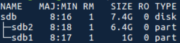

Zedboard
Boot from SD Card with ext4 filesystem
Chuẩn bị images
Trong tài liệu UG1144 có hướng dẫn quá trình cấu hình để có thể khởi động Zynq7000 từ SD Card. Trong hướng dẫn này cần lưu ý đến 2 điểm sau:
-
Thiết lập petalinux project để các image được package dưới dạng có thể boot được từ SD Card.
petalinux-config -
Tạo file rootfs.cpio bằng mã lệnh sau
petalinux-package \--image -c rootfs \--format initramfs
Nếu sử dụng lệnh package để tạo rootfs.cpio xuất hiện lỗi sau:
[INFO ] package rootfs.cpio to /tmp/petalinux/images/linux\ ERROR: Linux kernel gen_init_cpio /tmp/petalinux/build/linux/kernel/usr/gen_init_cpio doesn\'t exits! Please build Linux kernel first!\
make[1]: *** [package-rootfs-cpio] Fehler 255\
make: *** [package-rootfs-initramfs] Fehler 2\ ERROR: Failed to package component linux/rootfs
Trong diễn đàn của Xilinx (link) có thảo luận về phương pháp để khắc phục được lỗi trên. Bao gồm các bước xử lý như sau:
- Tắt chế độ automatic kernel configuration
petalinux-config\ Image Packaging Configuration ---> Root filesystem type = SD card\ Auto Config Settings ---> [ ] kernel autoconfig
- Bật chế độ hỗ trọ INITRAMFS trong cấu hình của kernel
$ petalinux-config -c kernel
General setup ->
[*] Initial RAM filesystem and RAM disk (initramfs/initrd) support
() Initramfs source file(s)
Chuẩn bị SD Card
Cần chuẩn bị SD Card với 02 phân vùng:
-
BOOT: được format ở định dạng FAT32 chứa BOOT.BIN (bao gồm FBSL, PL Bitstream, U-boot) và image.ub (Linux kernel và Device Tree).
-
rootfs: được format ở định dạng ext4 chứa root filesystem.
Quá trình chuẩn bị phân vùng trên SD Card này sẽ được tiến hành đơn giản bằng các GUI Tool như GParted.
Ngoài ra có thể sử dụng tổ hợp CLI tool: fdisk & mkfs.vfat & mkfs.ext4. Phương pháp sử dụng bộ công cụ này được mô tả chi tiết trong Wikipedia của Xilinx.
Kết quả của quá trình phân vùng và format này như sau:

Figure. SD Card Partitions
Cài đặt boot image và rootfs lên SD Card
Kết quả sau khi thực hiện xong các bước chuẩn bị liên quan đến images và SD Card:
-
Các file images: BOOT.BIN, image.ub và rootfs.cpio
-
SD Card với hai phân vùng: BOOT và rootfs.
Các images và filesystem phải được cài đặt lên SD Card trước khi board có thể khởi động được từ SD Card.
Quá trình cài đặt bootloader và Linux kernel là quá trình copy BOOT.BIN và image.ub lên phân vùng BOOT của sdcard. BootROM của zynq đủ mạnh để có thể tìm kiếm được zynq_fsbl.elf trên phân vùng định dạng FAT32 để khởi động.
Riêng rootfs đang được đóng gói ở file rootfs.cpio. Sử dụng ứng dụng pax để tháo dỡ filesystem đang được đóng gói ở định dạng cpio.
cp images/linux/rootfs.cpio /media/rootfs/
cd /media/rootfs
sudo pax -rvf rootfs.cpio
Phân tích và kết luận
Trong quá trình chuẩn bị SD Card xuất hiện các thuật ngữ. Trong mục này sẽ đi phân tích và giải thích các thuật ngữ đó.
CPIO
Trong hệ điều hành Linux xuất hiện khái niệm archive file, là kết quả của quá trình đóng gói nhiều file dữ liệu thành một file thống nhất (không có quá trình nén dữ liệu). Mục đích của quá trình đóng gói này là dễ dàng cho quá trình lưu trữ cũng như trao đổi dữ liệu. Archive file cũng được sử dụng làm đầu vào cho các trình nén dữ liệu.
Archive file được đóng gói bằng các file archiver. Trong Unix-like system, các file archiver phổ biến như: tar, ar, cpio.
Rootfs kết quả của bước 1 đang được đóng gói dưới dạng archive file - cpio. Quá trình cài đặt rootfs lên phân vùng rootfs trên SD Card bản chất là quá trình tháo dỡ các archive file trở về các file phân biệt ban đầu.
Quá trình extract này có thể được thực hiện bởi các Linux tool như: cpio hoặc pax. Trong hướng dẫn của Xilinx sử dụng pax để tháo dỡ rootfs.
File system format: fat32 và ext4.
File system là cách mà một hệ thống file được tổ chức trên các bộ nhớ lưu trữ. Các bộ nhớ lưu trữ có thể là: disk file system hoặc flash file system.
Fat32 và ext4 là tên của các dạng file system được tổ chức phổ biến trên các dòng disk file system như SD Card trong bài viết này là một ví dụ. Ngoài ra trong quá trình làm việc với Rootfs của zynq có thể sử dụng đến JFFS2 format là một định dạng file system sử dụng cho các bộ nhớ flash.